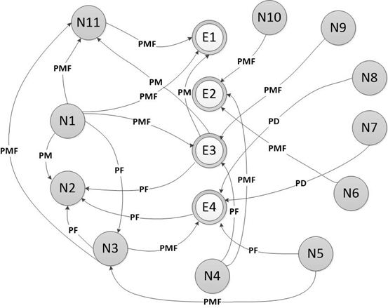

Computación en la nube
Con los avances en las tecnologías de información y comunicación, se han mostrado nuevas aplicaciones
para la Internet, en este caso, la computación en la nube o Cloud Computing, en la cual los recursos
informáticos son ofrecidos y utilizados a través de Internet. Siguiendo esta idea, La computación en
la nube es conveniente y rentable tanto para usuarios como para los proveedores; teniendo en cuenta
que existen riesgos al utilizar esta nueva tecnología, permite ahorros tanto en licencias como en
administración de servicios y de equipos. Esto se debe a la arquitectura conformada por capas con la
cual trabaja que corresponden al software, plataforma e infraestructura.
Mas información
La Informática, la Computación y la Ciencia de la Información: una alianza para el desarrollo
Con el objetivo de establecer las principales posturas existentes al momento de definir la Informática,
la Computación y la Ciencia de la Información; determinar sus objetos de estudio, áreas del conocimiento,
aplicaciones, similitudes, diferencias; así como de comprender el desarrollo de la Informática Médica en
el área de la salud, se realizó una revisión de la literatura disponible sobre el tema. Informática,
Computación y Ciencia de la Información son disciplinas diferentes aunque íntimamente relacionadas. Aun
cuando, los efectos de múltiples fenómenos políticos, económicos, sociales y científico-tecnológicos que
caracterizan el desarrollo de la humanidad en el periodo histórico actual, desdibujan las fronteras entre
las disciplinas científicas, entre las que se incluyen las tres mencionadas, hay algo que es mucho más
importante: ellas, bajo nuevos paradigmas, no dejan de continuar la búsqueda de nuevos conocimientos,
dispositivos y de una sociedad mejor.
Mas información
Computación: toma de desiciones mediante mapas cognitivos difusos
Los mapas cognitivos difusos han recibido una creciente atención para la representación del conocimiento
causal, siendo de especial utilidad en situaciones de decisión. En el presente trabajo se propone un modelo
para la toma de decisiones basado en mapas cognitivos difusos utilizando el paradigma de computación con
palabras con el objetivo de proporcionar modelos causales que sean fácilmente comprensibles. Para ello, se
propone el uso del modelo de representación lingüístico basado en 2-tuplas lingüísticas, el cual proporciona
resultados en este dominio lingüístico original. La principal ventaja del modelo propuesto para la toma de
decisiones basado en mapas cognitivos difusos es que permite aumentar la interpretabilidad de los modelos
causales y de los resultados de las simulaciones que son realizadas para evaluar las alternativas, siendo
este hecho de utilidad en la toma de decisiones.

Mas información